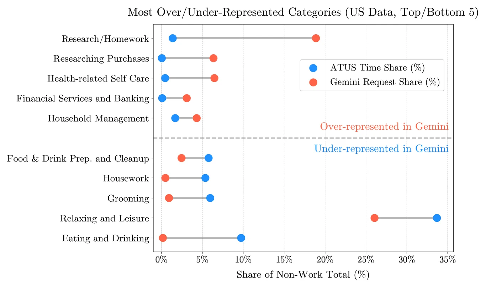
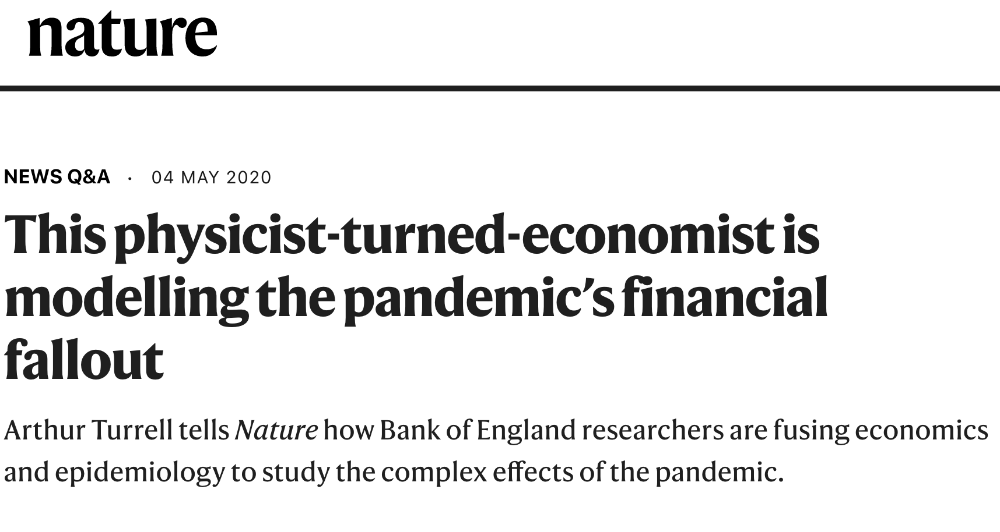
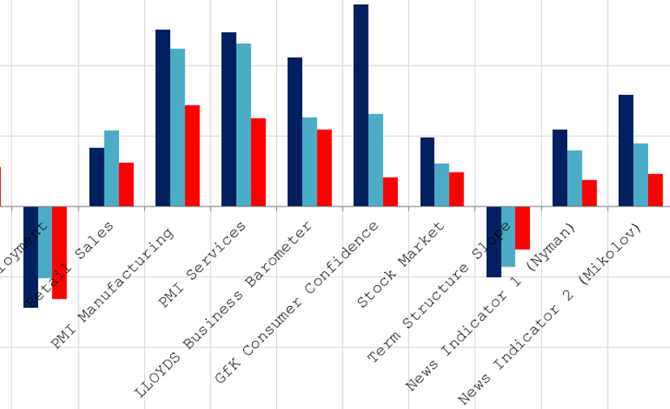
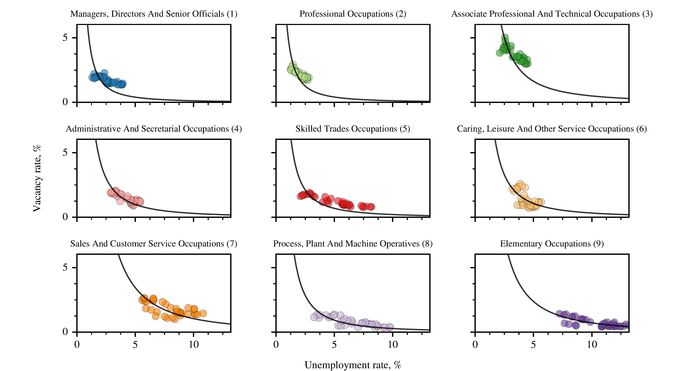
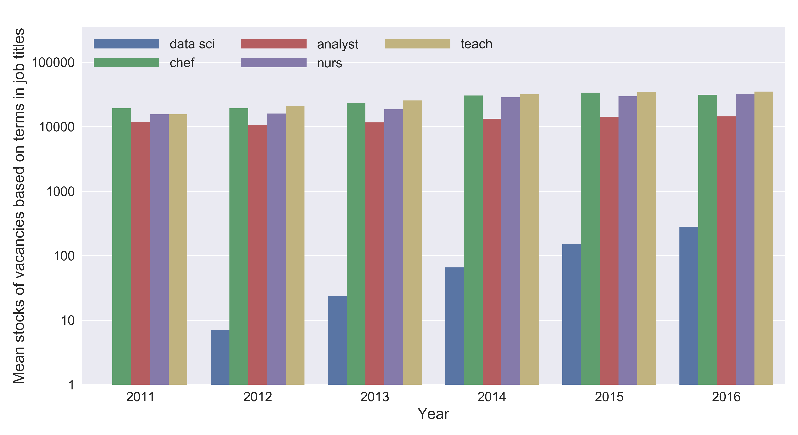
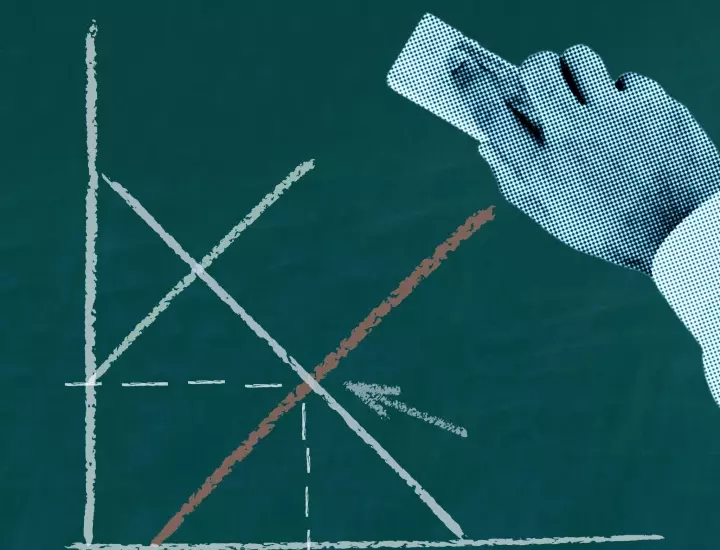
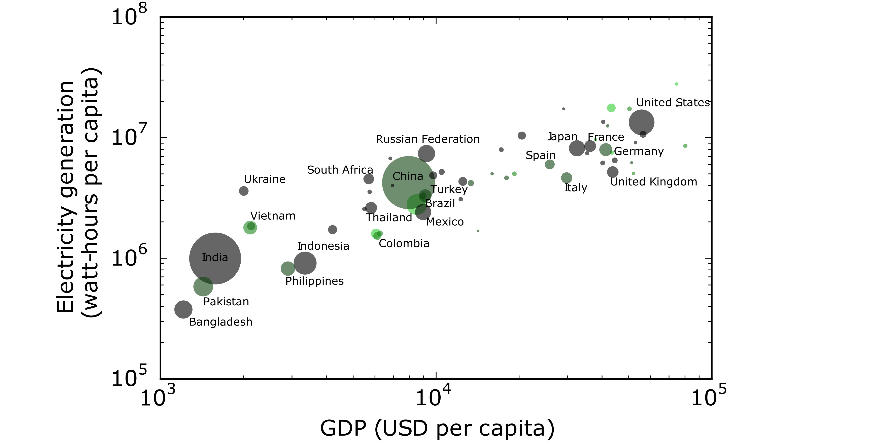

Conference talks, panels, podcasts, and external posts for economists, data scientists, and statisticians. My own writing is on the blog, and papers are on the research page. Talks and writing for general audiences are under Public Talks & Media.
Talks and panels
Chair for ESCoE Conference plenary
I was a co-organiser of the 2023 Economic Statistics Centre of Excellence conference. I chaired this plenary session in which Prof Diane Coyle spoke about The cost of computing and the productivity puzzle.
Faster, Cheaper, Better: Using Data Science to Strengthen ONS' Surveys
A talk I gave at the 2022 Joint Statistical Meeting titled 'Faster, Cheaper, Better: How the UK's Office for National Statistics Is Using Data Science to Strengthen Our Surveys'. Part of the session on 'How Can Data Science Improve Surveys?'
Big data, Bristol Economics Festival
I took part in a panel discussion on 'big data' at the Bristol Economics Festival (audio only). The panel was chaired by James Fransham (The Economist) and consisted of: data artist Tiziana Alocci; Dénes Csala (Economics Observatory); and Anna Powell-Smith, (director of the Centre for Public Data).
IARIW-ESCoE Conference on Intangible Assets
A session I chaired at the Economic Statistics Centre of Excellence conference on intangible assets.
ESCoE Workshop: Job vacancy data for the public good
A session I chaired at the Economic Statistics Centre of Excellence workshop on job vacancy data; the session had four excellent presentations on job vacancy data for the public good.

Chair: Modelling with Big Data & Machine Learning; Measuring Economic Instability session at the IMF
A session at the IMF.
Webinar on natural language processing
A webinar discussing the application of natural language processing to economics and finance hosted by Dow Jones.
Economic models, European Parliament
A talk I gave on economic models in 2018 at the European Parliament as part of a conference addressing post-growth topics.
Adopting agent-based models for public policy, US Treasury
Lecture given at the US Treasury during a conference on Heterogeneous Agents and Agent-based Modelling.
Podcasts
Macro Musings with David Beckworth
On Macro Musings to talk about the Bank of England, the future of economic data, and The Star Builders: Nuclear Fusion and the Race to Power the Planet.
centralbanking.com
Part of their series on rewiring macroeconomics. Check out previous episodes to hear from John Muellbauer, David Hendry, and David Vines.
External posts and commentary

AI, household time, and productivity
AI is changing how households spend their time, from managing finances and accessing public services to education and menu planning. Diane Coyle, Mihai Codreanu and Arthur Turrell argue that understanding AI’s impact on productivity and the wider economy requires recognising households as both consumers and producers – and measuring what happens to productivity growth in both paid work and domestic activity.


What's in the news? Text-based confidence indices and growth forecasts
Bank Underground blog post on using newspaper text as an input to nowcasts.

Making big data work for economics
Bank Underground blog post on using 'big data' to develop new measures of job vacancies in the UK. You can find the paper on the research page.


The rebuilding macroeconomics programme
Series of articles relating to the 'rebuilding macroeconomics' initiatives I took part in.

Power and progress
A short post on the Bank Underground blog showing the correlation between GDP per capita and electricity generation per capita.